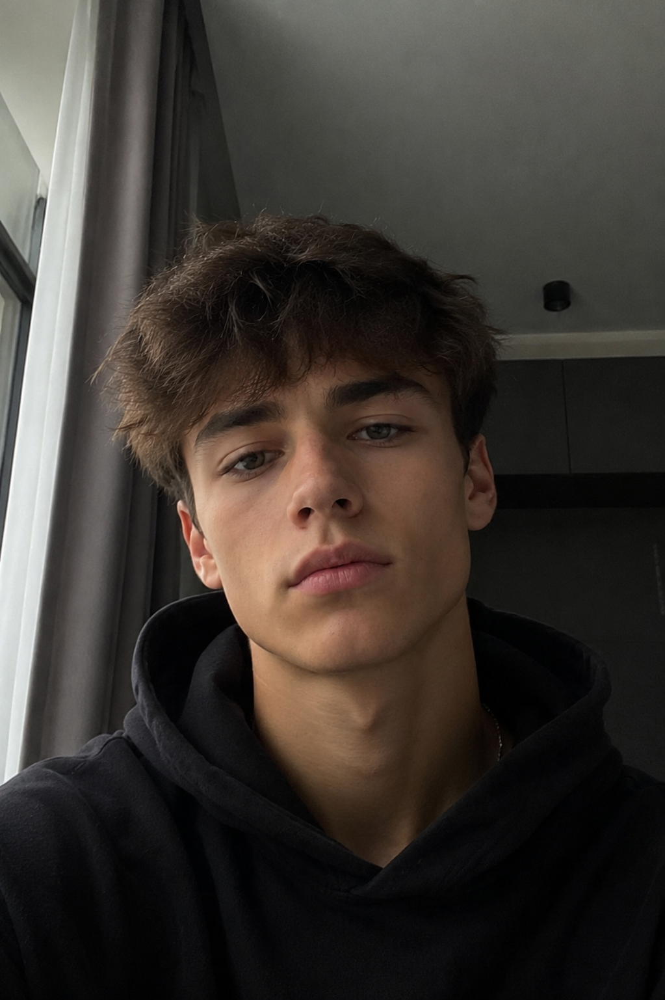
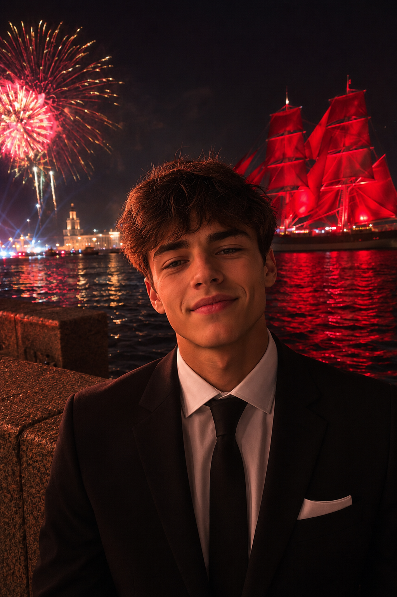
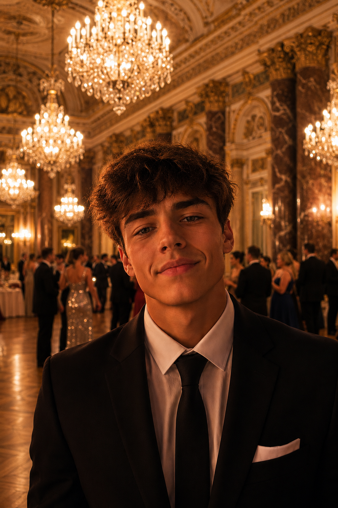
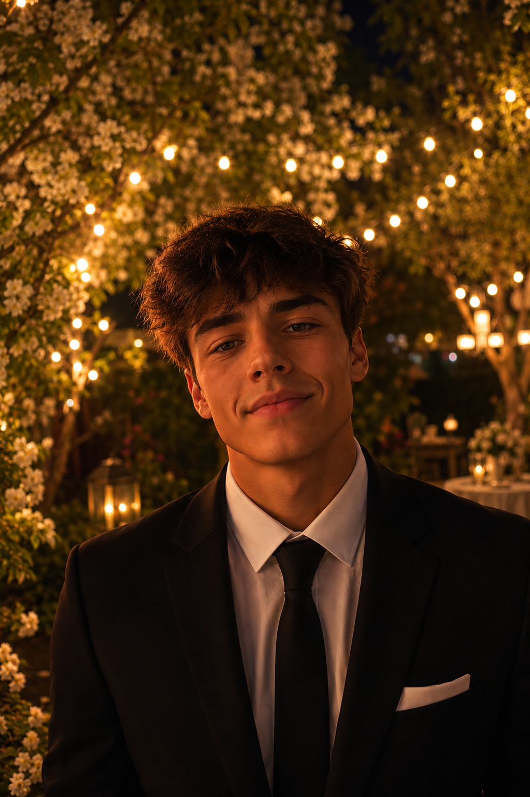
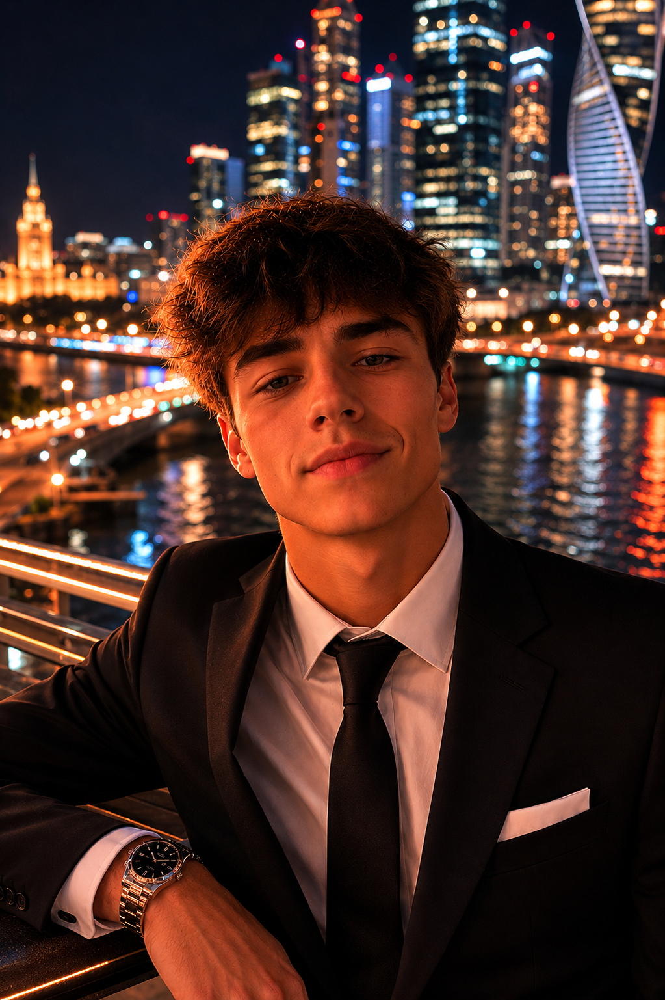
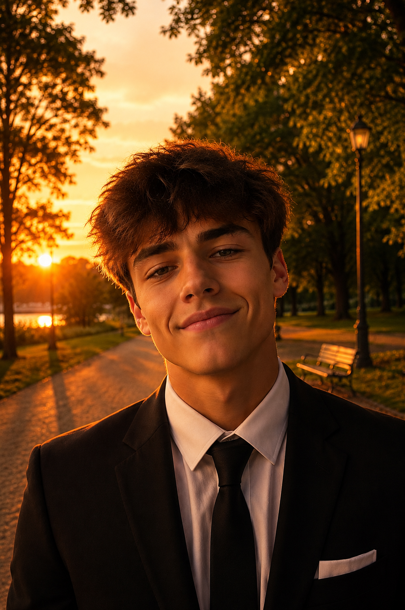

Промтзилла
Фото на выпускной
с помощью нейросети
5 готовых промтов для создания красивых выпускных фото через ИИ — от Алых Парусов до золотого заката. Загрузи своё фото и выбери фон.
📋 Пошаговая инструкция
- 1Перейди на study24.ai и открой инструмент Nano Banana PRO
- 2Нажми на иконку скрепки и загрузи своё фото — портрет анфас в полный или полуполный рост
- 3Выбери понравившийся фон ниже, скопируй промт и вставь в поле ввода
- 4Нажми отправить и подожди 15–20 секунд — нейросеть перенесёт тебя на новый фон
- 5Если одежда осталась повседневной — добавь к промту: «замени одежду на вечернее платье / костюм»
- 6Скачай результат и поделись в соцсетях
Промт 1 — Алые Паруса

ДоИсходное фото

ПослеАлые Паруса
RU
Загружаю своё фото. Перенеси меня на фон праздника Алые Паруса в Санкт-Петербурге. Фон: ночная набережная Невы, на реке — парусник с алыми парусами, подсвеченный красным светом. Праздничные огни, фейерверк или блики на воде. Атмосфера: торжественная, волшебная, летняя ночь. Освещение: тёплое праздничное, отблески красного света от парусов на лице. Если на фото повседневная одежда — заменить на нарядное вечернее платье (для девушки) или классический костюм (для юноши), подходящий для выпускного. Выражение лица сделать радостным — лёгкая улыбка или улыбка, естественная и живая. Человека на фото не изменять — сохранить лицо, фигуру точно. Вписать естественно в сцену, как будто человек стоит на набережной. Не менять внешность и возраст.
EN
I'm uploading my photo. Place me against the background of the Scarlet Sails celebration in Saint Petersburg. Background: night embankment of the Neva river, a tall ship with scarlet sails illuminated in red light on the water. Festive lights, fireworks or reflections on the river. Atmosphere: ceremonial, magical, summer night. Lighting: warm festive light, red reflections from the sails on the face. If the person is wearing casual clothes — replace with a formal evening dress (for a girl) or a classic suit (for a guy) appropriate for a graduation. Make the facial expression joyful — a light smile or a full smile, natural and genuine. Do not alter the person — preserve face and figure exactly. Blend naturally into the scene as if the person is standing on the embankment. Do not change appearance or age.
Промт 2 — Торжественный зал
ДоИсходное фото

ПослеТоржественный зал
RU
Загружаю своё фото. Перенеси меня в интерьер роскошного торжественного зала. Фон: высокие потолки с лепниной, хрустальные люстры, мраморные колонны, паркетный пол. Тёплый золотистый свет. Атмосфера: выпускной бал, торжество, элегантность. Освещение: мягкое золотое от люстр, без резких теней. Если на фото повседневная одежда — заменить на нарядное вечернее платье (для девушки) или классический костюм (для юноши), подходящий для выпускного. Выражение лица сделать радостным — лёгкая улыбка или улыбка, естественная и живая. Человека на фото не изменять — сохранить лицо, фигуру точно. Вписать естественно в интерьер, как будто человек стоит в зале. Не менять внешность и возраст.
EN
I'm uploading my photo. Place me inside a luxurious ceremonial hall. Background: high ceilings with moldings, crystal chandeliers, marble columns, parquet floor. Warm golden light. Atmosphere: graduation ball, celebration, elegance. Lighting: soft golden light from chandeliers, no harsh shadows. If the person is wearing casual clothes — replace with a formal evening dress (for a girl) or a classic suit (for a guy) appropriate for a graduation. Make the facial expression joyful — a light smile or a full smile, natural and genuine. Do not alter the person — preserve face and figure exactly. Blend naturally into the interior as if the person is standing in the hall. Do not change appearance or age.
Промт 3 — Цветущий сад
ДоИсходное фото

ПослеЦветущий сад
RU
Загружаю своё фото. Перенеси меня в летний вечерний сад с праздничными огнями. Фон: цветущие деревья (белые или розовые цветы), между ветвями — гирлянды тёплых огней. Мягкий вечерний свет, лёгкое боке на фоне. Атмосфера: романтичная, праздничная, летний вечер. Освещение: тёплое, рассеянное, золотистое. Если на фото повседневная одежда — заменить на нарядное вечернее платье (для девушки) или классический костюм (для юноши), подходящий для выпускного. Выражение лица сделать радостным — лёгкая улыбка или улыбка, естественная и живая. Человека на фото не изменять — сохранить лицо, фигуру точно. Вписать естественно в сцену, как будто человек стоит в саду. Не менять внешность и возраст.
EN
I'm uploading my photo. Place me in a summer evening garden with festive lights. Background: blooming trees (white or pink flowers), warm string lights woven through the branches. Soft evening light, gentle bokeh in the background. Atmosphere: romantic, festive, summer evening. Lighting: warm, diffused, golden. If the person is wearing casual clothes — replace with a formal evening dress (for a girl) or a classic suit (for a guy) appropriate for a graduation. Make the facial expression joyful — a light smile or a full smile, natural and genuine. Do not alter the person — preserve face and figure exactly. Blend naturally into the scene as if the person is standing in the garden. Do not change appearance or age.
Промт 4 — Городская ночь
ДоИсходное фото

ПослеГородская ночь
RU
Загружаю своё фото. Перенеси меня на фон ночного города. Фон: панорама ночного города — огни небоскрёбов или исторических зданий, размытые огни фонарей, боке. Летняя тёплая ночь. Атмосфера: торжественная, стильная, современная. Освещение: тёплое уличное, мягкое боке огней на фоне, лицо хорошо освещено. Если на фото повседневная одежда — заменить на нарядное вечернее платье (для девушки) или классический костюм (для юноши), подходящий для выпускного. Выражение лица сделать радостным — лёгкая улыбка или улыбка, естественная и живая. Человека на фото не изменять — сохранить лицо, фигуру точно. Вписать естественно в сцену, как будто человек стоит на смотровой площадке или мосту. Не менять внешность и возраст.
EN
I'm uploading my photo. Place me against a night city background. Background: night city panorama — illuminated skyscrapers or historic buildings, blurred street lights, bokeh. Warm summer night. Atmosphere: ceremonial, stylish, contemporary. Lighting: warm ambient street light, soft bokeh in background, face well-lit. If the person is wearing casual clothes — replace with a formal evening dress (for a girl) or a classic suit (for a guy) appropriate for a graduation. Make the facial expression joyful — a light smile or a full smile, natural and genuine. Do not alter the person — preserve face and figure exactly. Blend naturally into the scene as if the person is standing on a viewpoint or bridge. Do not change appearance or age.
Промт 5 — Золотой закат
ДоИсходное фото

ПослеЗолотой закат
RU
Загружаю своё фото. Перенеси меня на фон летнего парка на закате. Фон: парковая аллея или поляна, деревья в золотом закатном свете, тёплое оранжевое небо, длинные тени. Летний вечер. Атмосфера: тёплая, романтичная, торжественная. Освещение: золотой час — мягкий боковой свет, тёплые оранжевые и жёлтые тона. Если на фото повседневная одежда — заменить на нарядное вечернее платье (для девушки) или классический костюм (для юноши), подходящий для выпускного. Выражение лица сделать радостным — лёгкая улыбка или улыбка, естественная и живая. Человека на фото не изменять — сохранить лицо, фигуру точно. Вписать естественно в сцену, как будто человек стоит в парке на закате. Не менять внешность и возраст.
EN
I'm uploading my photo. Place me against a summer park at golden hour. Background: park alley or meadow, trees in golden sunset light, warm orange sky, long shadows. Summer evening. Atmosphere: warm, romantic, celebratory. Lighting: golden hour — soft side light, warm orange and yellow tones. If the person is wearing casual clothes — replace with a formal evening dress (for a girl) or a classic suit (for a guy) appropriate for a graduation. Make the facial expression joyful — a light smile or a full smile, natural and genuine. Do not alter the person — preserve face and figure exactly. Blend naturally into the scene as if the person is standing in the park at sunset. Do not change appearance or age.
Теги